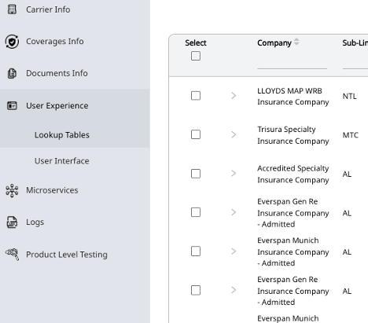
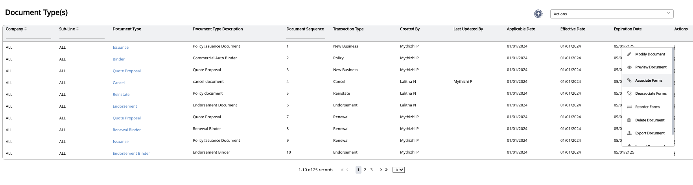
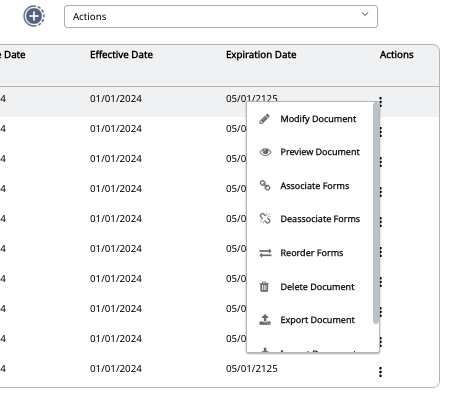
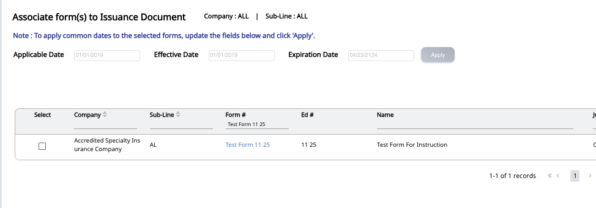
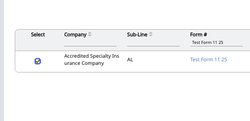
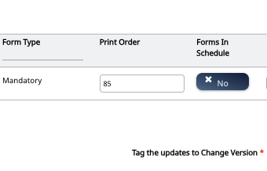
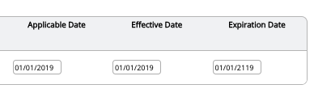
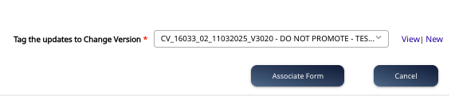

Overview - Associate to Documents
This guide walks through creating a new form in Solartis Builder—navigating to Forms, creating the form shell, mapping it to the proper Line of Business, selecting companies and jurisdictions, versioning, and saving.
Tip: Keep your form template ready to upload (.docx or platform-approved format), and confirm the correct Data Structure before saving.
Video Tutorial
Step-by-Step
Select Documents from the Sidebar
Open the Documents area in Solartis Builder to work with policy output artifacts.

Navigate to the Intended Document
For policy documents, choose Issuance and select either New Business or Renewal as appropriate.

Open Associate Forms
Under the document’s Actions menu, click Associate Forms.

Search for the Form
Use the search to locate the form by form number, name, or keywords.

Select the Form
Check the Select box next to the correct form to select it for association.

Enter Print Order
Provide the form’s display/print order relative to other forms on the document.

Set Applicable & Effective Dates
Update the Applicable Date (quote date) and Effective Date (policy date) as required for this association.

Re-Order Forms if Needed
If other forms need to be re-sequenced after adding this one, adjust their print order. See the separate Reorder Forms guidance if applicable.
Tag the Change Version
Tag these updates to the same Change Version as the form addition so they can be promoted together cleanly.

Considerations
- Have we associated the form with every required document type (New Business, Renewal Issuance, etc...?)
- Was the form associated with the correct applicable and effective dates?
- Was the form associated with all applicable carriers and lines of business?
- Was the form associated with the appropriate order for all carriers (note: different carriers may require different order numbers)?
- Is the existing form order affected (ie: if we add this form as #45 in the list, are there existing forms that need to be reordered)?
What’s Next?
- Reorder existing forms (if appilcable): Reorder Existing Forms